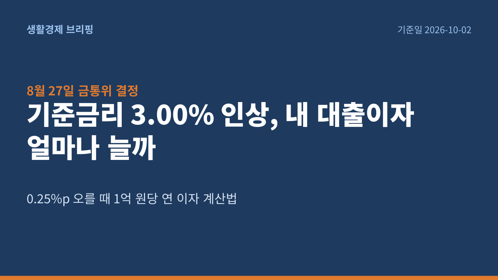
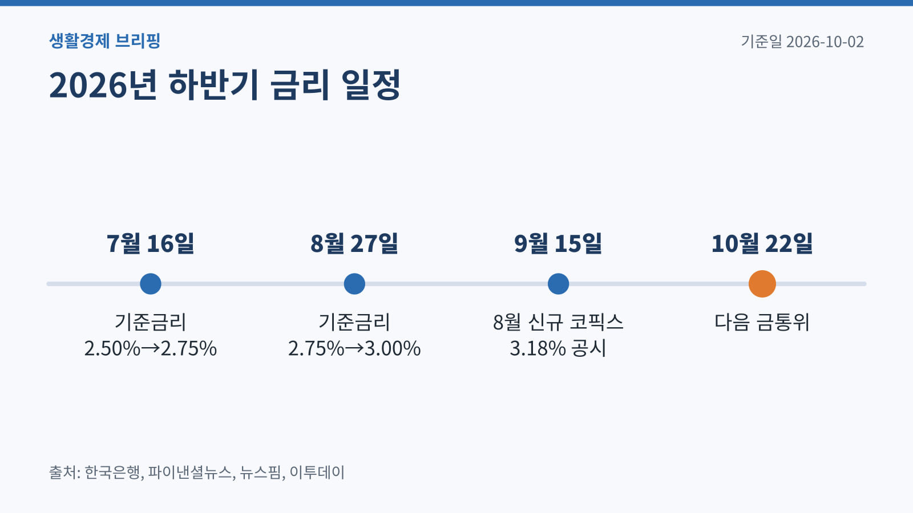
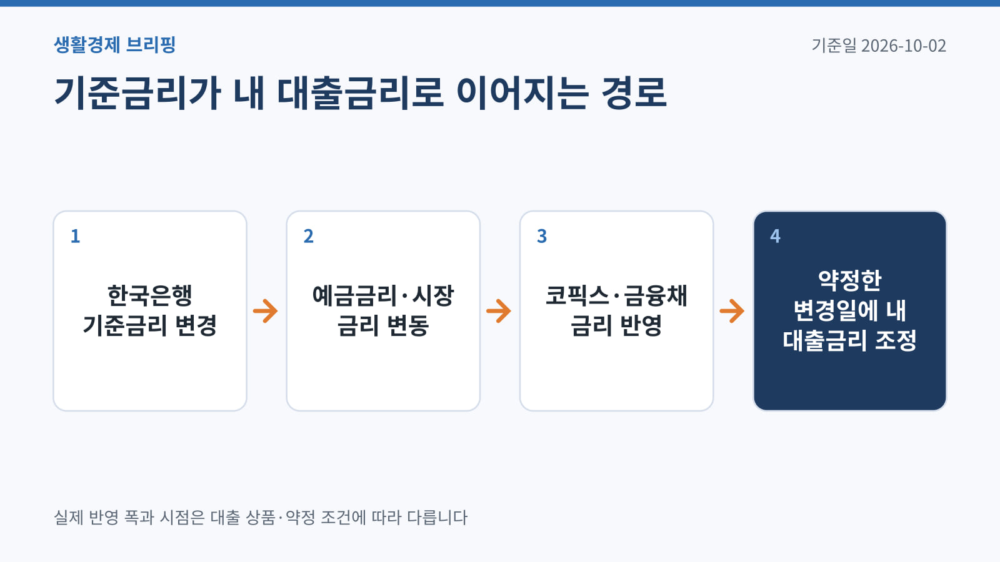
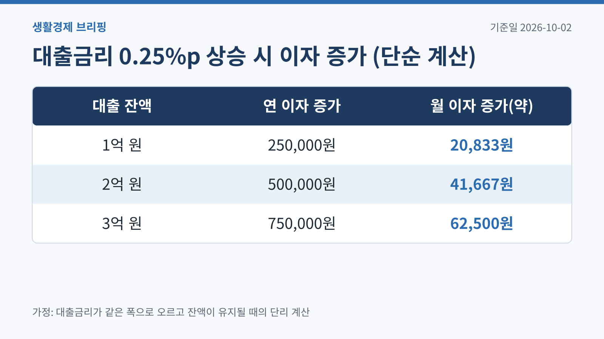
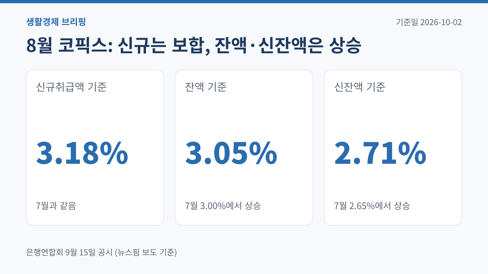
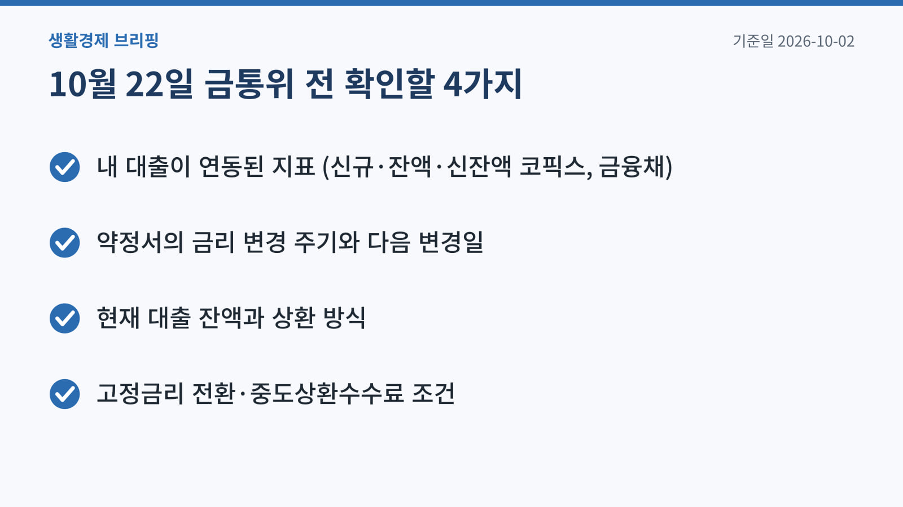

두 달 사이 기준금리가 두 번 올랐습니다.
뉴스에서는 0.25%p라는 작은 숫자로 보이지만, 대출 원금이 클수록 1년 이자 차이는 생각보다 커집니다.
다만 기준금리가 오른 만큼 내 대출금리가 그대로 오르는 것은 아닙니다. 이 글에서는 실제 영향을 계산하는 방법과 확인 순서를 정리했습니다.
핵심 요약 (기준일 2026-10-02)

기준금리는 2026년 7월 16일 연 2.50%에서 2.75%로 오르며 약 3년 6개월 만에 인상 방향으로 돌아섰습니다.[3]
이어 8월 27일 금융통화위원회는 기준금리를 연 3.00%로 한 번 더 올렸습니다.[1] 한국은행은 수출 호조와 내수 회복으로 성장세가 예상보다 높고, 물가상승률이 상당 기간 목표를 웃돌 것으로 보여 선제 대응이 필요하다고 설명했습니다.[1]
변동금리 대출을 쓰고 있다면 지금이 내 대출의 금리 기준과 변경 시점을 확인하기 좋은 때입니다. 다음 금통위가 열리기 전에 내 상황을 숫자로 정리해 두면 고정금리 전환이나 중도상환을 판단하기가 훨씬 쉬워집니다.

은행 대출금리는 보통 대출 기준금리 + 가산금리 - 우대금리로 정해집니다. 여기서 대출 기준금리는 한국은행 기준금리가 아니라 코픽스(COFIX)나 금융채 금리 같은 시장 지표입니다.
코픽스는 은행들이 예금 등으로 돈을 조달하는 비용을 모은 지수로, 은행연합회가 매달 공시합니다. 한국은행 기준금리가 오르면 예금금리와 시장금리가 따라 오르고, 그 결과가 코픽스에 반영되는 구조입니다.
그래서 기준금리 인상은 내 대출금리에 시차를 두고, 같은 폭이 아닐 수도 있게 전달됩니다. 아래 계산은 이 점을 감안해 '같은 폭으로 오른다고 가정한 최대치'로 이해하는 것이 안전합니다.

가장 단순한 계산식은 늘어나는 연 이자 = 대출 잔액 × 금리 상승폭입니다. 원금을 매달 갚는 대출이라면 잔액이 줄어드는 만큼 실제 증가액은 이보다 작습니다.
| 대출 잔액 | 연 이자 증가 | 월 이자 증가(약) |
|---|---|---|
| 1억 원 | 250,000원 | 20,833원 |
| 2억 원 | 500,000원 | 41,667원 |
| 3억 원 | 750,000원 | 62,500원 |
계산식: 대출 잔액 × 0.0025. 월 금액은 연 금액을 12로 나눈 값입니다.
7월과 8월 두 번의 인상을 합친 0.50%p가 모두 반영된다고 가정하면, 원금 1억 원 기준 연 이자는 500,000원 늘어납니다.
이 표는 '대출금리가 기준금리와 같은 폭으로 오른다'는 가정의 계산 예시입니다. 실제 변동 폭은 코픽스·금융채 금리, 가산금리, 우대금리 조건에 따라 달라집니다.

은행연합회가 9월 15일 공시한 8월 신규취급액 기준 코픽스는 3.18%로 7월과 같았습니다.[7]
반면 잔액 기준 코픽스는 3.00%에서 3.05%로, 신잔액 기준 코픽스는 2.65%에서 2.71%로 올랐습니다.[7]
언론 보도에 따르면 9월 들어 은행들이 예금금리를 올리고 금융채 금리도 상승해, 기존 변동금리 대출자의 부담은 당분간 커질 수 있다는 분석이 나옵니다.[8] 내 대출이 어느 코픽스(신규·잔액·신잔액)에 연동되는지에 따라 체감이 달라지는 이유입니다.

여러 은행의 대출금리는 은행연합회 소비자포털의 대출금리 비교 공시에서 확인할 수 있습니다.[9]

꼭 그렇지는 않습니다. 대출금리는 코픽스나 금융채 같은 시장 지표에 연동되므로 오르는 폭과 시점이 다를 수 있습니다. 내 대출의 연동 지표와 변경 주기를 먼저 확인하세요.
고정 기간 동안 약정 금리는 바뀌지 않습니다. 다만 혼합형 대출은 고정 기간이 끝난 뒤 변동금리로 바뀔 때 그 시점의 지표가 반영됩니다.
다음 통화정책방향 결정 금통위는 10월 22일로 예정돼 있습니다.[6]
이 글은 2026-10-02 기준 공개 자료를 정리한 일반 정보이며 금융·세무·법률 자문이 아닙니다. 상품 조건과 제도는 바뀔 수 있으니 신청 전 해당 기관의 최신 공지를 확인하세요.